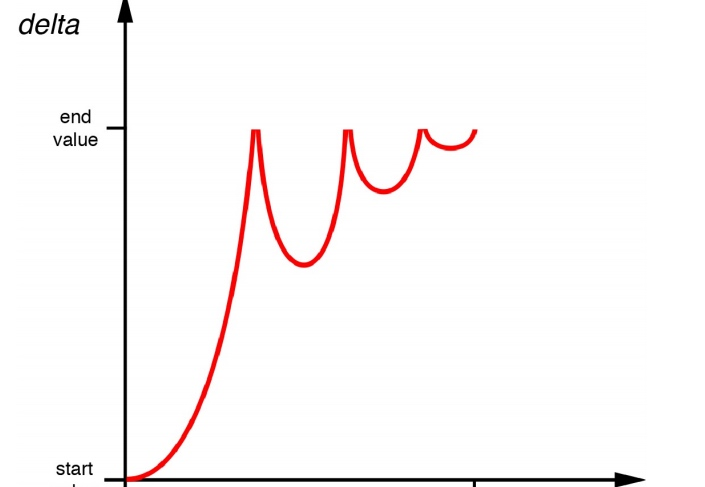

基于定时器的动画
缓冲主要学习CAMediaTimingFunction通过来做加速减速等增强现实感.
本章学习精确地控制一帧一帧展示的基于定时器的动画,来更加真实模拟物理交互或者根据用户输入来改变动画
定时帧
iOS按照每秒60次刷新屏幕,CAAnimation计算出需要展示的新的帧。
NSTimer
我们可以用NStimer来一秒钟更新60次，来做动画.
用NSTimer做动画的话需要几个属性来存储动画的fromValue ，toValue，duration和当前的 timeOffset。
示例代码省略
但是用NSTimer并不是一个很好的方案
iOS中每个线程都管理了一个NSRunloop，通过循环来完成一些任务列表
但是主线程的任务有:
- 处理触摸事件
- 发送和接受网络数据包
- 执行使用gcd的代码
- 处理定时器行为
- 屏幕重绘
当我们设置了一个NSTimer,会被插入到当前任务列表中,指定时间过去后才被执行.但是何时启动定时器并没有一个时间上限，而且它只会在列表中上一个任务完成之后开始执行。这通常会导致有几毫秒的延迟，但是如果上一个任务过了很久才完成就会导致延迟很长一段时间。
屏幕重绘的频率是一秒钟六十次，但是和定时器行为一样，如果列表中上一个执行了很长时间，它也会延迟。这些延迟都是一个随机值，于是就不能保证定时器精准地一秒钟执行六十次。有时候发生在屏幕重绘之后，这就会使得更新屏幕会有个延迟，看起来就是动画卡壳了。有时候定时器会在屏幕更新的时候执行两次，于是动画看起来就跳动了。
优化方法:
- 我们可以用 CADisplayLink 让更新频率严格控制在每次屏幕刷新之后。
- 基于真实帧的持续时间而不是假设的更新频率来做动画。
- 调整动画计时器的
run loop模式，这样就不会被别的事件干扰。
CADisplayLink
CADisplayLink是CoreAnimation提供的另一个类似NSTimer类,总是在屏幕完成一次更新之前启动,它和NSTimer的内部实现相同,只不过它不是以时间间隔秒为单位,CADisplayLink 有一个整型的frameInterval 属性，指定了间隔多少帧之后才执行。默认值是1，意味着每次屏幕更新之前都会执行一次。(我们可以根据动画的执行时间来确定多少帧执行一次)
虽然CADisplayLink也不能保证每帧都按计划执行,出现丢帧情况,但是和NSTimer不同的是NSTimer一有机会就会开启,而CADisplayLink如果丢帧的话会直接忽略它们,在下一次更新时接着运行;
self.timer = [CADisplayLink displayLinkWithTarget:self selector:@selector(step:)];
[self.timer addToRunLoop:[NSRunLoop mainRunLoop] forMode:NSDefaultRunLoopMode];
- (void)step:(CADisplayLink *)timer
{
//calculate time delta
CFTimeInterval thisStep = CACurrentMediaTime();
CFTimeInterval stepDuration = thisStep - self.lastStep;
self.lastStep = thisStep;
self.timeOffset = MIN(self.timeOffset + stepDuration, self.duration);
//get normalized time offset (in range 0 - 1)
float time = self.timeOffset / self.duration;
//apply easing
time = bounceEaseOut(time);
//interpolate position
id position = [self interpolateFromValue:self.fromValue toValue:self.toValue
time:time];
//move ball view to new position
self.ballView.center = [position CGPointValue];
//stop the timer if we've reached the end of the animation
if (self.timeOffset >= self.duration) {
[self.timer invalidate];
self.timer = nil;
}
}
Run Loop 模式
创建Run Loop时需要指定mode,iOS会根据指定的优先级,，而且当UI很活跃的时候的确会暂停一些别的任务.
- NSDefaultRunLoopMode - 标准优先级
- NSRunLoopCommonModes - 高优先级
- UITrackingRunLoopMode - 用于 UIScrollView 和别的控件的动画
/*我们可以同时加入 NSDefaultRunLoopMode 和 UITrackingRunLoopMode
来保证它不会被滑动打断，也不会被其他UIKit控件动画影响性能
**/
self.timer = [CADisplayLink displayLinkWithTarget:self selector:@selector(step:)];
[self.timer addToRunLoop:[NSRunLoop mainRunLoop] forMode:NSDefaultRunLoopMode];
[self.timer addToRunLoop:[NSRunLoop mainRunLoop] forMode:UITrackingRunLoop];
物理模拟
我们在上面的方法中，关键帧的实现中我们提前加计算了所有帧,这次我们按需要进行计算,这样我们可以根据用户输入实时修改动画的逻辑，或者和别的实时动画系统例如物理引擎进行整合。
Chipmunk
基于物理学创建一个真实的重力模拟效果来取代当前基于缓冲的弹性动画,因为模拟物理效果太复杂了，我们直接使用开源的物理引擎,我这里使用Chipmunk，有很多版本包括和Objective-C绑定的“indie”版本下载地址
我们只简单使用这个引擎中的几个类:
- cpSpace - 所有的物理结构体的容器。它有一个大小和一个可选的重力矢量
- cpBody - 一个固态无弹力的刚体。它有一个坐标，以及其他物理属性，例如质量，运动和摩擦系数等等。
- cpShape - 一个抽象的几何形状，用来检测碰撞。可以给结构体添加一个多边形，而且
cpShape有各种子类来代表不同形状的类型。
因为C语言是不支持引用计数的所以为了准确的创建和释放我们将cpShape和cpBody和Crate（木箱）类进行绑定，在木箱的- init方法中创建,-dealloc中释放。用视图控制器来管理cpSpace
Chipmunk使用了一个和UIKit颠倒的坐标系（Y轴向上为正方向）。我们可以使用geometryFlipped属性翻转容器视图的集合坐标,这样模型和视图就共享一个坐标系了
geometryFlipped设置layer的这个属性可以调整坐标系Y轴方向
代码示例:
//创建木箱的image对象
@interface Crate : UIImageView
@property (nonatomic, assign) cpBody *body;
@property (nonatomic, assign) cpShape *shape;
@end
@implementation Crate
#define MASS 100
- (id)initWithFrame:(CGRect)frame
{
if ((self = [super initWithFrame:frame])) {
//set image
self.image = [UIImage imageNamed:@"Crate.png"];
self.contentMode = UIViewContentModeScaleAspectFill;
//create the body
self.body = cpBodyNew(MASS, cpMomentForBox(MASS, frame.size.width, frame.size.height));
//create the shape
cpVect corners[] = {
cpv(0, 0),
cpv(0, frame.size.height),
cpv(frame.size.width, frame.size.height),
cpv(frame.size.width, 0),
};
self.shape = cpPolyShapeNew(self.body, 4, corners, cpv(-frame.size.width/2, -frame.size.height/2));
//set shape friction & elasticity
cpShapeSetFriction(self.shape, 0.5);
cpShapeSetElasticity(self.shape, 0.8);
//link the crate to the shape
//so we can refer to crate from callback later on
self.shape->data = (__bridge void *)self;
//set the body position to match view
cpBodySetPos(self.body, cpv(frame.origin.x + frame.size.width/2, 300 - frame.origin.y - frame.size.height/2));
}
return self;
}
- (void)dealloc
{
//release shape and body
cpShapeFree(_shape);
cpBodyFree(_body);
}
@end
//创建重力空间
@interface ViewController ()
@property (nonatomic, weak) IBOutlet UIView *containerView;
@property (nonatomic, assign) cpSpace *space;
@property (nonatomic, strong) CADisplayLink *timer;
@property (nonatomic, assign) CFTimeInterval lastStep;
@end
@implementation ViewController
#define GRAVITY 1000
- (void)viewDidLoad
{
//invert view coordinate system to match physics
self.containerView.layer.geometryFlipped = YES;
//set up physics space
self.space = cpSpaceNew();
cpSpaceSetGravity(self.space, cpv(0, -GRAVITY));
//add a crate
Crate *crate = [[Crate alloc] initWithFrame:CGRectMake(100, 0, 100, 100)];
[self.containerView addSubview:crate];
cpSpaceAddBody(self.space, crate.body);
cpSpaceAddShape(self.space, crate.shape);
//start the timer
self.lastStep = CACurrentMediaTime();
self.timer = [CADisplayLink displayLinkWithTarget:self selector:@selector(step:)];
[self.timer addToRunLoop:[NSRunLoop mainRunLoop] forMode:NSDefaultRunLoopMode];
}
void updateShape(cpShape *shape, void *unused)
{
//get the crate object associated with the shape
Crate *crate = (__bridge Crate *)shape->data;
//update crate view position and angle to match physics shape
cpBody *body = shape->body;
crate.center = cpBodyGetPos(body);
crate.transform = CGAffineTransformMakeRotation(cpBodyGetAngle(body));
}
- (void)step:(CADisplayLink *)timer
{
//calculate step duration
CFTimeInterval thisStep = CACurrentMediaTime();
CFTimeInterval stepDuration = thisStep - self.lastStep;
self.lastStep = thisStep;
//update physics
cpSpaceStep(self.space, stepDuration);
//update all the shapes
cpSpaceEachShape(self.space, &updateShape, NULL);
}
@end
添加用户交互
为了使木箱不掉落到屏幕外 我们在屏幕周围添加四条线来限制范围;
通过给cpSpace添加四个cpSegmentShape对象（cpSegmentShape代表一条直线，所以四个拼起来就是一个矩形）。然后赋值给空间的staticBody属性(这是不受重力的结构体)，而不是像木箱那样会受重力的cpBody实例，因为我们不想这线画出屏幕或者被木箱击中消失。
通过添加一个加速器,可以通过倾斜手机来调整重力矢量,在横屏模式下，要交换加速计矢量的x和y值，竖屏模式下再换回来.
代码省略
模拟时间以及固定的时间步长
在上面我们做动画的缓冲效果来说,都是计算每帧的持续时间，这样的话两个时间步长就是可变的,对于模拟物理效果并不理想:
因此我们通过固定的时间步长来计算物理效果，还要保证在屏幕发生重绘时能够同步更新视图
因为刚好我们的模型（在这个例子中就是Chipmunk的 cpSpace 中的 cpBody ）被视图（就是屏幕上代表木箱的 UIView 对象）分离，于是就很简单了。我们只需要根据屏幕刷新的时间跟踪时间步长，然后根据每帧去计算一个或者多个模拟出来的效果。
/**
通过每次 CADisplayLink 的启动来通知屏幕将要刷新，然后记录下当前的
CACurrentMediaTime() 。
在一个小增量中提前重复物理模拟（这里用120分之一秒）直到赶上显示的时间。然后更新我们的视图，
在屏幕刷新的时候匹配当前物理结构体的显示位置。
*/
#define SIMULATION_STEP (1/120.0)
- (void)step:(CADisplayLink *)timer
{
//calculate frame step duration
CFTimeInterval frameTime = CACurrentMediaTime();
//update simulation
while (self.lastStep < frameTime) {
cpSpaceStep(self.space, SIMULATION_STEP);
self.lastStep += SIMULATION_STEP;
}
//update all the shapes
cpSpaceEachShape(self.space, &updateShape, NULL);
}
避免死亡螺旋
在上面例子中我们随意选择了1/120秒来模拟物理效果,但是我们在场景很复杂，cpSpaceStp()计算也会超出1/120秒,这样就会造成延迟帧率,帧延迟的话，我们需要更多时间来同步真实时间,这样就越来越慢，直到应用程序卡死,这就是所谓的死亡螺旋
为了避免这种情况 我们需要留下足够的时间容错，如果物理计算超过了模拟时间的50%，就需要考虑增加模拟时间步长（或者简化场景）。如果模拟时间步长增加到超过1/60秒（一个完整的屏幕更新时间），你就需要减少动画帧率到一秒30帧或者增加CADisplayLink的frameInterval来保证不会随机丢帧，不然你的动画将会看起来不平滑。
缓冲
Core Animation使用缓冲来使动画移动更平滑更自然。我们来试着研究如何对你的动画控制和自定义缓冲曲线。
动画速度
velocity = change / time（假设速度不变也就是“线性步调”）
其实速度在动画整个移动过程中并不一定是恒定不变的,是有加速度的,为了实现这种加速度,一种方法是使用物理引擎来对运动物体的摩擦和动量来建模，然而这会使得计算过于复杂。我们称这种类型的方程为缓冲函数，幸运的是，Core Animation内嵌了一系列标准函数提供给我们使用。
CAMediaTimingFunction
显式动画CAAnimation的timingFunction属性就是CAMediaTimingFunction类对象
隐式动画用CATransaction的+setAnimationTimingFunction:方法，来调整动画时间函数
CAMediaTimingFunction用+timingFunctionWithName:方法构造对象：
//几种常量
kCAMediaTimingFunctionLinear//。默认。线性计时函数
kCAMediaTimingFunctionEaseIn//慢慢加速然后突然停止
kCAMediaTimingFunctionEaseOut//全速开始 慢慢减速停止
kCAMediaTimingFunctionEaseInEaseOut//慢慢加速然后再慢慢减速
kCAMediaTimingFunctionDefault//类似淡入淡出但是加速和减速过程更慢
/**
UIView 的动画方法默认kCAMediaTimingFunctionEaseInEaseOut
CAAinamtion 默认kCAMediaTimingFunctionLinear
*/
[CATransaction begin];
[CATransaction setAnimationDuration:1.0];
[CATransaction setAnimationTimingFunction:[CAMediaTimingFunction functionWithName:kCAMediaTimingFunctionEaseOut]];
//set the position
self.colorLayer.position = [[touches anyObject] locationInView:self.view];
//commit transaction
[CATransaction commit];
UIView 的动画缓冲
UIView 动画的缓冲选项，options参数
UIViewAnimationOptionCurveEaseInOut//默认
UIViewAnimationOptionCurveEaseIn
UIViewAnimationOptionCurveEaseOut
UIViewAnimationOptionCurveLinear
- (void)touchesBegan:(NSSet *)touches withEvent:(UIEvent *)event
{
//perform the animation
[UIView animateWithDuration:1.0 delay:0.0 options:UIViewAnimationOptionCurveEaseOut
animations:^{
//set the position
self.colorView.center = [[touches anyObject] locationInView:self.view];
}
completion:NULL];
}
缓冲和关键帧动画
对于关键帧动画：我们不想给整个动画过程应用这个效果，我们希望对每个动画的过程重复这样的缓冲.
CAKeyframeAnimation 有一个 NSArray 类型的timingFunctions属性，我们
可以用它来对每次动画的步骤指定不同的计时函数。这个数组个数需要与关键帧(keyframes)个数减一,它是每两个关键帧之间的效果.
//create a keyframe animation
CAKeyframeAnimation *animation = [CAKeyframeAnimation animation];
animation.keyPath = @"backgroundColor";
animation.duration = 2.0;
animation.values = @[
(__bridge id)[UIColor blueColor].CGColor,
(__bridge id)[UIColor redColor].CGColor,
(__bridge id)[UIColor greenColor].CGColor,
(__bridge id)[UIColor blueColor].CGColor ];
//add timing function
CAMediaTimingFunction *fn = [CAMediaTimingFunction functionWithName: kCAMediaTimingFunctionEaseIn];
animation.timingFunctions = @[fn, fn, fn];
//apply animation to layer
[self.colorLayer addAnimation:animation forKey:nil];
自定义缓冲函数
除了+functionWithName:之外,CAMediaTimingFunction还有另一个构造函数+functionWithControlPoints::::（四个浮点参数）可以创建一个自定义的缓冲函数.
三次贝塞尔曲线
曲线的斜率代表了速度，斜率的改变代表了加速度,
CAMediaTimingFunction使用了一个叫做三次贝塞尔曲线的函数，它只可以产出指定缓冲函数的子集,用四个点来定义，第一个和最后一个点代表了曲线的起点和终点,剩下中间两个点控制了曲线的形状（曲线并不一定要穿过这两个点）.

CAMediaTimingFunction有- getControlPointAtIndex:values:的方法(Index为0.1.2.3 分别代表着四个点)，可以用来检索曲线的点.使用它我们可以找到标准缓冲函数的点，然后用UIBezierPath和CAShapeLayer 来把它画出来。
曲线的起始和终点始终是{0, 0}和{1, 1}
//可以通过改变常量来看各个函数
CAMediaTimingFunction *function = [CAMediaTimingFunction functionWithName: kCAMediaTimingFunctionEaseOut];
//get control points
CGPoint controlPoint1, controlPoint2;
[function getControlPointAtIndex:1 values:(float *)&controlPoint1];
[function getControlPointAtIndex:2 values:(float *)&controlPoint2];
//create curve
UIBezierPath *path = [[UIBezierPath alloc] init];
[path moveToPoint:CGPointZero];
[path addCurveToPoint:CGPointMake(1, 1)
controlPoint1:controlPoint1 controlPoint2:controlPoint2];
//scale the path up to a reasonable size for display
[path applyTransform:CGAffineTransformMakeScale(200, 200)];
//create shape layer
CAShapeLayer *shapeLayer = [CAShapeLayer layer];
shapeLayer.strokeColor = [UIColor redColor].CGColor;
shapeLayer.fillColor = [UIColor clearColor].CGColor;
shapeLayer.lineWidth = 4.0f;
shapeLayer.path = path.CGPath;
[self.layerView.layer addSublayer:shapeLayer];
//flip geometry so that 0,0 is in the bottom-left
self.layerView.layer.geometryFlipped = YES;
//要初始微弱，然后迅速上升，最后缓冲到终点
[CAMediaTimingFunction functionWithControlPoints:1 :0 :0.75 :1];

更加复杂的动画曲线

实现这个效果方法:
- 用 CAKeyframeAnimation 创建一个动画，然后分割成几个步骤，每个小步骤使用自己的计时函数。
- 使用定时器逐帧更新实现动画
基于关键帧的缓冲
我们用关键帧缓冲来实现上面的小球掉落动画
很显然我们的每个关键帧就是就是每次反弹的峰值,
CAKeyframeAnimation *animation = [CAKeyframeAnimation animation];
animation.keyPath = @"position";
animation.duration = 1.0;
animation.delegate = self;
animation.values = @[
[NSValue valueWithCGPoint:CGPointMake(150, 32)],
[NSValue valueWithCGPoint:CGPointMake(150, 268)],
[NSValue valueWithCGPoint:CGPointMake(150, 140)],
[NSValue valueWithCGPoint:CGPointMake(150, 268)],
[NSValue valueWithCGPoint:CGPointMake(150, 220)],
[NSValue valueWithCGPoint:CGPointMake(150, 268)],
[NSValue valueWithCGPoint:CGPointMake(150, 250)],
[NSValue valueWithCGPoint:CGPointMake(150, 268)]
];
animation.timingFunctions = @[
[CAMediaTimingFunction functionWithName: kCAMediaTimingFunctionEaseIn],
[CAMediaTimingFunction functionWithName: kCAMediaTimingFunctionEaseOut],
[CAMediaTimingFunction functionWithName: kCAMediaTimingFunctionEaseIn],
[CAMediaTimingFunction functionWithName: kCAMediaTimingFunctionEaseOut],
[CAMediaTimingFunction functionWithName: kCAMediaTimingFunctionEaseIn],
[CAMediaTimingFunction functionWithName: kCAMediaTimingFunctionEaseOut],
[CAMediaTimingFunction functionWithName: kCAMediaTimingFunctionEaseIn]
];
animation.keyTimes = @[@0.0, @0.3, @0.5, @0.7, @0.8, @0.9, @0.95, @1.0];
//apply animation
self.ballView.layer.position = CGPointMake(150, 268);
[self.ballView.layer addAnimation:animation forKey:nil];
//这样计算每个关键帧也太麻烦了,一旦有修改又要计算关键帧的位置
流程自动化
如果我们将动画分割为足够小的部分,那么就可以用直线来拼接为这些曲线
Core Animation的插值机制:传入起点和终点，然后在这两个点之间指定时间点产出一个新点的机制
/**
简单的浮点起始值
*/
value = (endValue – startValue) × time + startValue;
这是对简单的浮点值进行插值,如果是比较复杂的类似CGPoint、CGColorRef或者CATransform3D等我们可以可以对其中的每个元素（CGPoint 中的x和y值、CGColorRef 中的红，蓝，绿，透明值，或者是 CATransform3D 中独立矩阵的坐标）用这种方法,我们可以在逻辑插值前将对象拆解,插值后再重新封装成对象.
我们获得属性动画起始值的任意插值,就可以将动画分为许多独立关键帧,产出一个线性的关键帧动画.
因为Core Animation是每秒60帧去渲染屏幕更新,因此我们每秒生成60个关键帧可以保证动画平滑
float interpolate(float from, float to, float time)
{
return (to - from) * time + from;
}
- (id)interpolateFromValue:(id)fromValue toValue:(id)toValue time:(float)time
{
if ([fromValue isKindOfClass:[NSValue class]]) {
//get type
const char *type = [fromValue objCType];
if (strcmp(type, @encode(CGPoint)) == 0) {
CGPoint from = [fromValue CGPointValue];
CGPoint to = [toValue CGPointValue];
CGPoint result = CGPointMake(interpolate(from.x, to.x, time), interpolate(from.y, to.y, time));
return [NSValue valueWithCGPoint:result];
}
}
//provide safe default implementation
return (time < 0.5)? fromValue: toValue;
}
- (void)animate
{
//reset ball to top of screen
self.ballView.center = CGPointMake(150, 32);
//set up animation parameters
NSValue *fromValue = [NSValue valueWithCGPoint:CGPointMake(150, 32)];
NSValue *toValue = [NSValue valueWithCGPoint:CGPointMake(150, 268)];
CFTimeInterval duration = 1.0;
//generate keyframes
NSInteger numFrames = duration * 60;
NSMutableArray *frames = [NSMutableArray array];
for (int i = 0; i < numFrames; i++) {
float time = 1 / (float)numFrames * i;
[frames addObject:[self interpolateFromValue:fromValue toValue:toValue time:time]];
}
//create keyframe animation
CAKeyframeAnimation *animation = [CAKeyframeAnimation animation];
animation.keyPath = @"position";
animation.duration = 1.0;
animation.delegate = self;
animation.values = frames;
//apply animation
[self.ballView.layer addAnimation:animation forKey:nil];
}
但是上面的方式非常复杂,因为缓冲数学并不简单，我们可以直接使用现成的缓冲函数,例如:
//缓冲进入缓冲退出函数
float quadraticEaseInOut(float t)
{
`return (t < 0.5)? (2 * t * t): (-2 * t * t) + (4 * t) - 1;
}
//弹性小球 bounceEaseOut函数
float bounceEaseOut(float t)
{
if (t < 4/11.0) {
return (121 * t * t)/16.0;
} else if (t < 8/11.0) {
return (363/40.0 * t * t) - (99/10.0 * t) + 17/5.0;
} else if (t < 9/10.0) {
return (4356/361.0 * t * t) - (35442/1805.0 * t) + 16061/1805.0
}
return (54/5.0 * t * t) - (513/25.0 * t) + 268/25.0;
}
//我们使用上面的弹性小球函数来实现
- (void)animate
{
//reset ball to top of screen
self.ballView.center = CGPointMake(150, 32);
//set up animation parameters
NSValue *fromValue = [NSValue valueWithCGPoint:CGPointMake(150, 32)];
NSValue *toValue = [NSValue valueWithCGPoint:CGPointMake(150, 268)];
CFTimeInterval duration = 1.0;
//generate keyframes
NSInteger numFrames = duration * 60;
NSMutableArray *frames = [NSMutableArray array];
for (int i = 0; i < numFrames; i++) {
float time = 1/(float)numFrames * i;
//apply easing
time = bounceEaseOut(time);
//add keyframe
[frames addObject:[self interpolateFromValue:fromValue toValue:toValue time:time]];
}
//create keyframe animation
CAKeyframeAnimation *animation = [CAKeyframeAnimation animation];
animation.keyPath = @"position";
animation.duration = 1.0;
animation.delegate = self;
animation.values = frames;
//apply animation
[self.ballView.layer addAnimation:animation forKey:nil];
}
Copyright © 2015 Powered by MWeb, Theme used GitHub CSS.